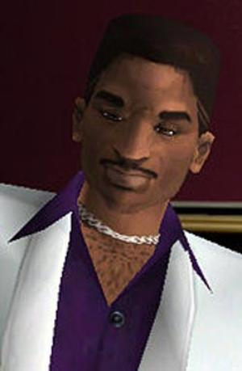

Victor Vance - É o primeiro a aparacer na franquia cronológica da era 3D. Principal protagonista do jogo (Grand Theft Auto Vice City Stories) com o jogo se passando em (1984). Vivendo uma aventura junto com o seu irmão, Lance Vance.
Lance Vance – Irmão de Victor Vance. Tambem é o maior ajudante de Tommy Vercetti protagonista de (grand theft auto vice city) assim fazendo uma grande história e tendo uma grande ligação com esses dois games da franquia.